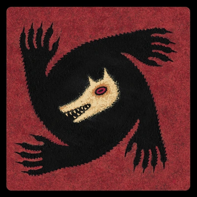

Nuzelock Pokemon
Une pokérace sera créée spécialement pour l'évènement de la communauté. Celle-ci sera un nuzelock, c'est à dire :
- Si un pokémon meurt il ne pourra plus être utilisé.
- Vous ne devez capturer qu'un seul et unique pokémon dans une zone.
- Si vous trouver un pokémon quevous avez déjà capturé et qu'il est encore en vie, vous pouvez capturer le prochain qui se pointera.

Loup Garou de Thiercelieux
Plusieurs parties du Loup Garou de Thiercelieux seront créées pendant l'évènement. Pour ceux qui ne savent pas :
- Deux camps : Gentils (villageois) et méchants (Loups garous)
- Vous récupérez des cartes spéciaux (ou pas) avec différents pouvoir pour débloquer certaines situations ambigües.
- Mais certaines cartes feront de vous des personnages solitaires...